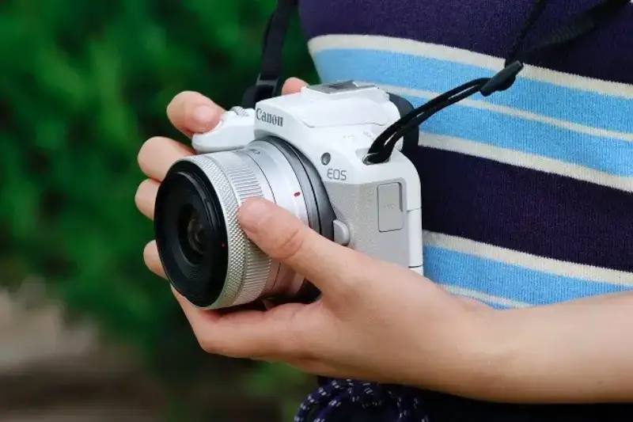
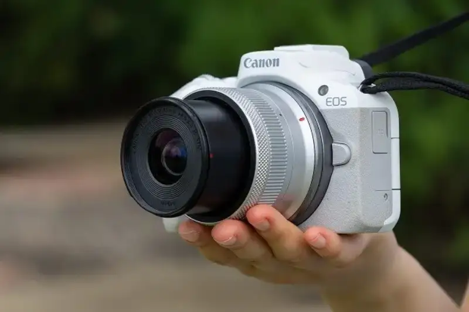
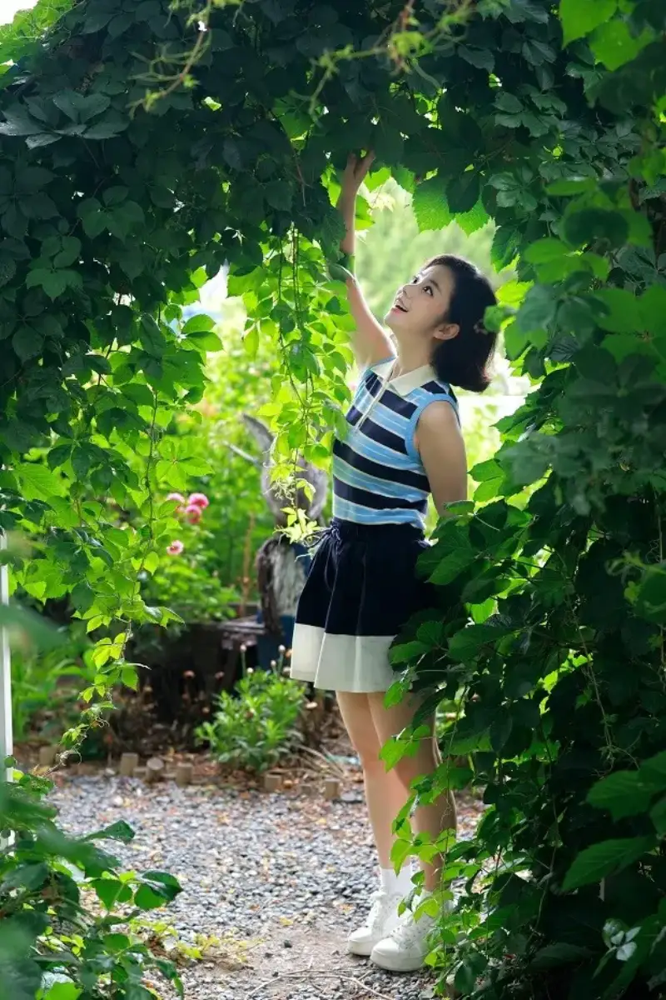
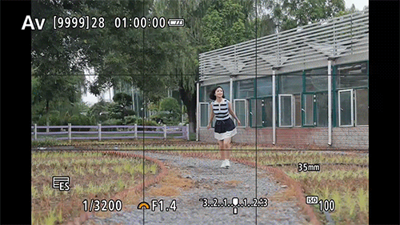
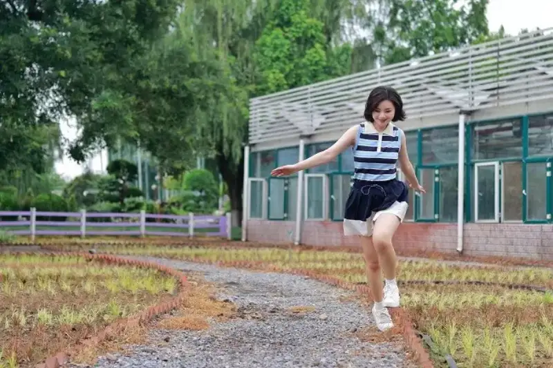
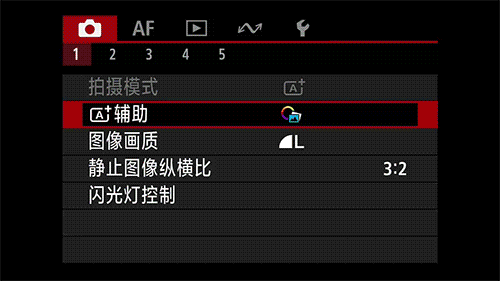
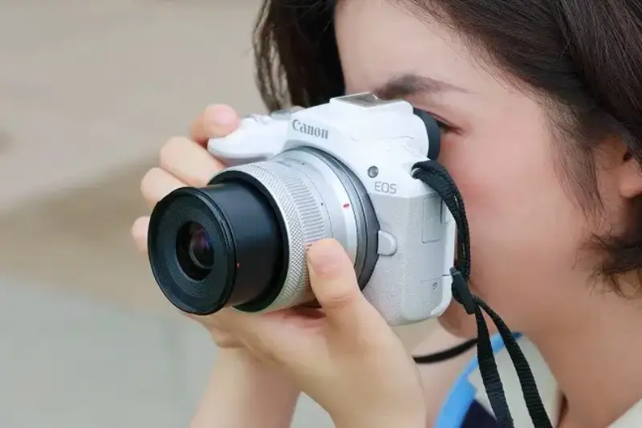

High summer is hard to bear. It is scorching and humid outside, and you want only to stay in an air-conditioned room. But in a photographer's eyes, summer is the most alive season of the year: bright summer flowers, busy summer insects, and I most of all like to shoot lively summer portraits.

The Canon EOS R50 is a mirrorless camera I really like, with a very high looks score. Its unique white body feels fresh, its tiny and light shape carries with no effort, and in a woman's hand it is the best fashion companion. For this portrait shoot I paired it with the Canon RF35mm F1.4 L VCM lens. On the EOS R50, this classic documentary focal length gives a view of about 56 mm. From far it shoots environmental portraits, and from near it shoots close-ups. With the large F1.4 aperture it easily gives a very moody background blur. The EOS R50's strong autofocus and burst speed are especially impressive.

● 24.2 megapixels for strong image quality
The EOS R50 has an APS-C 24.2-megapixel CMOS sensor. The output is sharp, and even a large crop for a recomposition keeps strong quality, which helps a lot with portraits. Some shots never look perfectly framed, and a simple crop can give a missed photo new life.
Canon EOS R50 + RF35mm F1.4 L VCM lens
f/1.4 1/1600s ISO100
Canon EOS R50 + RF35mm F1.4 L VCM lens
f/1.4 1/1000s ISO100

Canon EOS R50 + RF35mm F1.4 L VCM lens
f/1.4 1/400s ISO100
● A focus system on a professional level
Do not let the EOS R50's cute size fool you. Its focus ability is no joke. It uses the second-generation Dual Pixel CMOS AF, with 651 AF zones across about 100 percent of the CMOS, and the camera chooses among them. It also recognizes people, cats, dogs, birds, race cars, and motorcycles. With auto recognition and tracking, it predicts the subject's motion for better follow focus. For portraits I turn on eye AF, and whether it is a full-length shot or a close-up, the eye is locked in real time. You just press the shutter, and the sharp photo is ready before you press it. For moving portraits I use continuous AF, and the eye stays locked, whether I use burst or single shooting, focus is the most reassuring part.
Canon EOS R50 + RF35mm F1.4 L VCM lens
f/1.4 1/500s ISO100
Canon EOS R50 + RF35mm F1.4 L VCM lens
f/1.4 1/1250s ISO100
Canon EOS R50 + RF35mm F1.4 L VCM lens
f/1.4 1/400s ISO100
● A good-lookingmirrorlesscamerawith ultra-high-speed burst.
Ultra-high-speed burst used to be a feature of flagship and sports pro bodies. But on the small EOS R50 you can easily own 15 frames per second. This is advanced shooting ability brought down to a mainstream camera by technology. I set the electronic shutter and high-speed burst+ mode, and kept shooting as the model ran and jumped. The instant detail was excellent. A mainstream mirrorless camera can deliver professional motion capture.


Canon EOS R50 + RF35mm F1.4 L VCM lens
f/1.4 1/3200s ISO100
● A+ advanced mode for instant entry
If you are new to the EOS R50, you need not fear that the controls will stop you. Try the green A+ advanced mode on the mode dial. With the quick-start guide, you can choose the background sharpness, brightness, color, and contrast you want. You do not need to understand how aperture and shutter work together, or the three factors that affect background blur. You can start fast, enter at once, and get the shot effect you imagine.
Canon EOS R50 + RF35mm F1.4 L VCM lens
f/2.8 1/1250s ISO100
The A+ mode also has creative bracketing. When a scene offers little, creative bracketing helps spark ideas. One shutter press gives four creative effects. After shooting, you pick and keep the one you like best, or continue one creative effect for more post work. A scene that looked boring can become more interesting.

Creative bracketing results

● Notes after shooting
The EOS R50 is the most affordable of Canon's APS-C mirrorless cameras, the smallest to look at, and the lightest to carry, yet its shooting ability is not simple. Whether the deep-learning AF algorithm, the 651-zone focus system, the 15 fps burst, or the sharp output, it has professional qualities. If you like vlogging, you can even shoot 4K 30p video oversampled from 6K, and the clips transfer wirelessly to your phone over WiFi or Bluetooth for quick sharing. Small, stylish, and versatile, the EOS R50 will be a good companion for your summer trips.